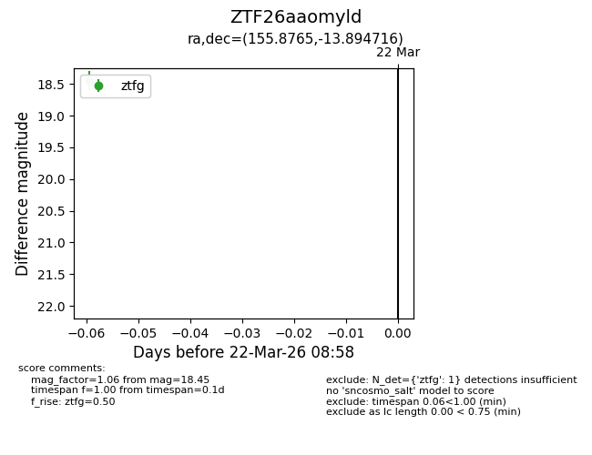
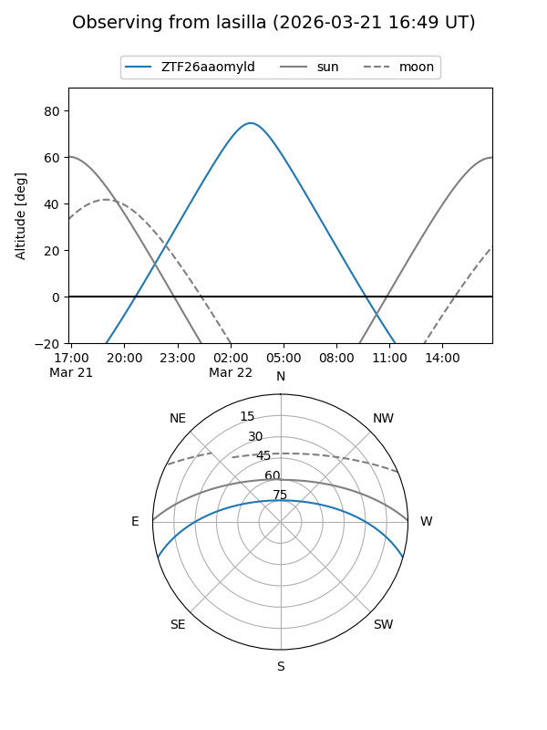
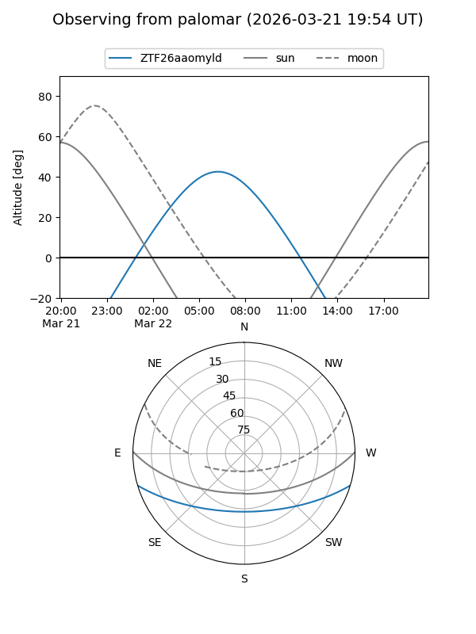

ZTF26aaomyld
Target ZTF26aaomyld at 2026-03-22 09:00
Aliases and brokers:
FINK: link
Lasair: link
ALeRCE: link
alt names
ZTF26aaomyld (ztf,fink_ztf)
Coordinates:
equatorial (ra, dec) = 155.8765,-13.89472
equatorial (HMS+DMS) = 10:23:30.37,-13:53:40.98
galactic (l, b) = (257.1026,+35.49510)
Flags:
Photometry:
last ztfg=18.45
1 ztfg detections
Lightcurve

Visibility


Additional plots